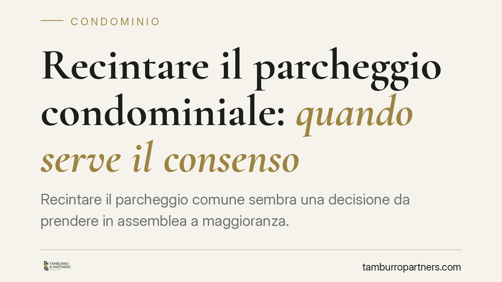

Recintare il parcheggio condominiale: quando serve il consenso
Recintare il parcheggio comune sembra una decisione da prendere in assemblea a maggioranza. In realtà l'operazione tocca due piani distinti: l'uso della cosa comune tra condòmini e i vincoli urbanistici sui parcheggi pertinenziali. Sottrarre a un condomino il godimento di uno spazio comune richiede il suo consenso, non basta una delibera. E i profili edilizi vanno verificati con il Comune.

Il problema pratico
Un condomino, o l'assemblea, decide di recintare l'area destinata a parcheggio. L'operazione appare banale, ma incrocia due discipline diverse: quella civilistica sull'uso e le innovazioni della cosa comune, e quella urbanistico-edilizia sui parcheggi pertinenziali.
Confondere i due piani è l'errore più frequente. Una delibera adottata a maggioranza può essere perfettamente inutile se sottrae a un singolo condomino il diritto di parcheggiare, oppure se realizza un manufatto senza titolo edilizio.
Inquadramento normativo
Sul versante civilistico, l'art. 1102 c.c. consente a ciascun condomino di usare la cosa comune purché non ne alteri la destinazione e non impedisca agli altri di farne pari uso. Il parcheggio rientra tra le parti comuni ai sensi dell'art. 1117 c.c.
La recinzione può configurarsi come innovazione (art. 1120 c.c.) e richiede i relativi quorum qualificati. Ma occorre distinguere. Una cosa è deliberare un'innovazione che lascia intatto il godimento di tutti; altra cosa è una delibera che, di fatto, sottrae a un condomino l'uso dello spazio a cui ha diritto. In quest'ultimo caso non si discute di quorum assembleari: serve il consenso del condomino leso, perché nessuna maggioranza può privare il singolo di un diritto sulla cosa comune.
La delibera che incide sul godimento di un condomino, comprimendo un suo diritto individuale, è nulla e non semplicemente annullabile. Ciò comporta due conseguenze operative rilevanti: la nullità è imprescrittibile e può essere fatta valere in ogni tempo, anche dal condomino assente o dissenziente. Il termine dei 30 giorni previsto dall'art. 1137 c.c. per l'impugnazione riguarda invece i soli vizi di annullabilità, cioè i difetti procedurali o di competenza dell'assemblea.
Sul versante urbanistico, la dotazione minima di parcheggi negli edifici è disciplinata dall'art. 41-sexies della L. 17.08.1942, n. 1150, introdotto dall'art. 18 della L. 06.08.1967, n. 765 e successivamente modificato dalla L. 24.03.1989, n. 122 (cosiddetta legge Tognoli). Questi spazi hanno un vincolo di destinazione pertinenziale. Un intervento che ne modifichi conformazione o uso può richiedere un titolo edilizio comunale e non è sanabile in via retroattiva se realizzato in violazione dei vincoli.
Cosa cambia per condòmini e amministratore
Per l'amministratore il messaggio è netto: una recinzione non è mai una decisione a due piani, è una decisione a due binari.
Primo binario, il rapporto tra condòmini. Se la recinzione riduce o azzera l'uso del parcheggio per anche uno solo dei proprietari, la maggioranza non basta: senza il consenso del condomino interessato la delibera è nulla ed esposta a impugnazione senza limiti di tempo.
Secondo binario, il rapporto con il Comune. Anche una recinzione condivisa da tutti può essere illegittima sul piano edilizio se manca il titolo o se viola i vincoli sui parcheggi pertinenziali. Le due verifiche vanno fatte insieme, prima di deliberare.
Per il singolo condomino che vede recintare lo spazio senza il proprio assenso, esiste sempre la possibilità di far valere la nullità della delibera, non essendo vincolato al termine di trenta giorni.
Cosa fare in concreto
- Verificate la natura dell'intervento. Accertate se la recinzione comprime il godimento di anche un solo condomino: in tal caso raccogliete il consenso scritto del soggetto interessato prima di procedere.
- Inquadrate il quorum corretto. Distinguete tra innovazione ex art. 1120 c.c. (quorum qualificato) e lesione del diritto individuale (consenso del singolo). Non assimilate automaticamente i due casi.
- Controllate i vincoli urbanistici. Chiedete al Comune se l'area è soggetta al vincolo pertinenziale ex art. 41-sexies L. 1150/1942 e se l'intervento necessita di titolo edilizio.
- Verbalizzate con precisione. Riportate in assemblea il tipo di intervento, i quorum raggiunti e i consensi individuali acquisiti, per rendere tracciabile la regolarità della decisione.
- Non sanate a posteriori. Non avviate i lavori confidando in una regolarizzazione successiva: gli interventi in violazione dei vincoli pertinenziali non sono sanabili retroattivamente.
---
*Contributo informativo a cura di Tamburro & Partners – Avv. Giuseppe Tamburro. Non costituisce parere legale.*
Ogni condominio ha una storia a sé.
Se gestisci un'amministrazione e vuoi un confronto su una specifica questione condominiale, scrivi allo studio. Ti rispondiamo entro un giorno lavorativo.